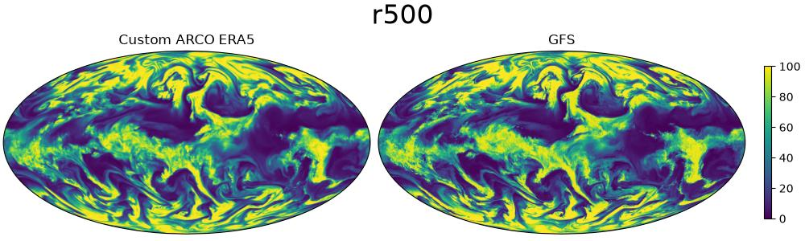
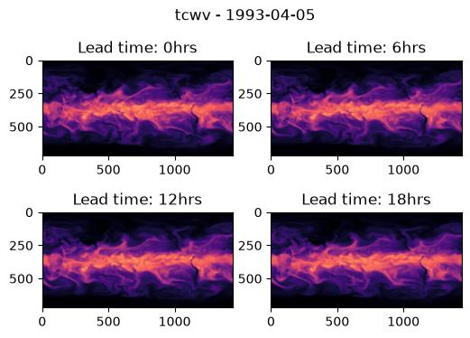

Extending Data Sources¶
Implementing a custom data source
This example will demonstrate how to extend Earth2Studio by implementing a custom data source to use in a built in workflow.
In this example you will learn:
- API requirements of data soruces
- Implementing a custom data soruce
Custom Data Source¶
Earth2Studio defines the required APIs for data sources in
[earth2studio.data.base.DataSource][] which requires just a call function.
For this example, we will consider extending an existing remote data source with
another atmospheric field we can calculate.
The earth2studio.data.ARCO data source provides the ERA5 dataset in a cloud
optimized format, however it only provides specific humidity. This is a problem for
models that may use relative humidity as an input. Based on ECMWF documentation we can
calculate the relative humidity based on temperature and geo-potential.
import os
os.makedirs("outputs", exist_ok=True)
from dotenv import load_dotenv
load_dotenv() # TODO: make common example prep function
from datetime import datetime
import numpy as np
import xarray as xr
from earth2studio.data import ARCO, GFS
from earth2studio.data.utils import prep_data_inputs
from earth2studio.utils.type import TimeArray, VariableArray
class CustomDataSource:
"""Custom ARCO datasource"""
relative_humidity_ids = [
"r50",
"r100",
"r150",
"r200",
"r250",
"r300",
"r400",
"r500",
"r600",
"r700",
"r850",
"r925",
"r1000",
]
def __init__(self, cache: bool = True, verbose: bool = True):
self.arco = ARCO(cache, verbose)
def __call__(
self,
time: datetime | list[datetime] | TimeArray,
variable: str | list[str] | VariableArray,
) -> xr.DataArray:
"""Function to get data.
Parameters
----------
time : datetime | list[datetime] | TimeArray
Timestamps to return data for (UTC).
variable : str | list[str] | VariableArray
String, list of strings or array of strings that refer to variables to
return. Must be in IFS lexicon.
Returns
-------
xr.DataArray
"""
time, variable = prep_data_inputs(time, variable)
# Replace relative humidity with respective temperature
# and specifc humidity fields
variable_expanded = []
for v in variable:
if v in self.relative_humidity_ids:
level = int(v[1:])
variable_expanded.extend([f"t{level}", f"q{level}"])
else:
variable_expanded.append(v)
variable_expanded = list(set(variable_expanded))
# Fetch from ARCO
da_exp = self.arco(time, variable_expanded)
# Calculate relative humidity when needed
arrays = []
for v in variable:
if v in self.relative_humidity_ids:
level = int(v[1:])
t = da_exp.sel(variable=f"t{level}").values
q = da_exp.sel(variable=f"q{level}").values
rh = self.calc_relative_humdity(t, q, 100 * level)
arrays.append(rh)
else:
arrays.append(da_exp.sel(variable=v).values)
da = xr.DataArray(
data=np.stack(arrays, axis=1),
dims=["time", "variable", "lat", "lon"],
coords=dict(
time=da_exp.coords["time"].values,
variable=np.array(variable),
lat=da_exp.coords["lat"].values,
lon=da_exp.coords["lon"].values,
),
)
return da
def calc_relative_humdity(
self, temperature: np.array, specific_humidity: np.array, pressure: float
) -> np.array:
"""Relative humidity calculation
Parameters
----------
temperature : np.array
Temperature field (K)
specific_humidity : np.array
Specific humidity field (g.kg-1)
pressure : float
Pressure (Pa)
Returns
-------
np.array
"""
epsilon = 0.621981
p = pressure
q = specific_humidity
t = temperature
e = (p * q * (1.0 / epsilon)) / (1 + q * (1.0 / (epsilon) - 1))
es_w = 611.21 * np.exp(17.502 * (t - 273.16) / (t - 32.19))
es_i = 611.21 * np.exp(22.587 * (t - 273.16) / (t + 0.7))
alpha = np.clip((t - 250.16) / (273.16 - 250.16), 0, 1.2) ** 2
es = alpha * es_w + (1 - alpha) * es_i
rh = 100 * e / es
return rh
Console output2 lines
/__w/earth2studio/earth2studio/.venv/lib/python3.13/site-packages/torch/cuda/__init__.py:64: FutureWarning: The pynvml package is deprecated. Please install nvidia-ml-py instead. If you did not install pynvml directly, please report this to the maintainers of the package that installed pynvml for you.
import pynvml # type: ignore[import]__call__ API¶
The call function is the main API of data source which return the Xarray data array with the requested data. For this custom data source we intercept relative humidity variables, replace them with temperature and specific humidity requests then calculate the relative humidity from these fields. Note that the ARCO data source is handling the remote complexity, we are just manipulating Numpy arrays
calc_relative_humdity¶
Based on the calculations ECMWF uses in their IFS numerical simulator which accounts for estimating the water vapor and ice present in the atmosphere.
Note
See reference, equation 7.98 onwards: www.ecmwf.int/en/elibrary/81370-ifs-documentation-cy48r1-part-iv-physical-processes
Verification¶
Before plugging this into our workflow, let's quickly verify our data source is consistent with when GFS provides for relative humidity.
ds = CustomDataSource()
da_custom = ds(time=datetime(2022, 1, 1, hour=0), variable=["r500"])
ds_gfs = GFS()
da_gfs = ds_gfs(time=datetime(2022, 1, 1, hour=0), variable=["r500"])
print(da_custom)
Console output26 lines
Fetching ARCO data: 0%| | 0/2 [00:00<?, ?it/s]
Fetching ARCO data: 50%|█████ | 1/2 [00:02<00:02, 2.16s/it]
Fetching ARCO data: 100%|██████████| 2/2 [00:02<00:00, 1.08s/it]
Fetching GFS data: 0%| | 0/1 [00:00<?, ?it/s]
Fetching GFS data: 100%|██████████| 1/1 [00:00<00:00, 1.27it/s]
Fetching GFS data: 100%|██████████| 1/1 [00:00<00:00, 1.27it/s]
<xarray.DataArray (time: 1, variable: 1, lat: 721, lon: 1440)> Size: 8MB
array([[[[ 28.01413468, 28.01413468, 28.01413468, ..., 28.01413468,
28.01413468, 28.01413468],
[ 29.75579658, 29.75314258, 29.81191126, ..., 29.77167483,
29.76636404, 29.76376009],
[ 31.28908409, 31.28075462, 31.27237381, ..., 31.31699177,
31.30860053, 31.29746972],
...,
[ 97.36539026, 97.35685903, 97.39891442, ..., 97.34011022,
97.32321665, 97.31468906],
[ 97.50236648, 97.49380369, 97.54603948, ..., 97.5280597 ,
97.51949448, 97.51949448],
[102.58417544, 102.58417544, 102.58417544, ..., 102.58417544,
102.58417544, 102.58417544]]]])
Coordinates:
* time (time) datetime64[ns] 8B 2022-01-01
* variable (variable) <U4 16B 'r500'
* lat (lat) float64 6kB 90.0 89.75 89.5 89.25 ... -89.5 -89.75 -90.0
* lon (lon) float64 12kB 0.0 0.25 0.5 0.75 ... 359.0 359.2 359.5 359.8import cartopy.crs as ccrs
import matplotlib.pyplot as plt
fig, ax = plt.subplots(
1,
2,
figsize=(10, 3),
subplot_kw={"projection": ccrs.Mollweide()},
constrained_layout=True,
)
ax[0].imshow(
da_custom.sel(variable="r500")[0], transform=ccrs.PlateCarree(), vmin=0, vmax=100
)
ax[1].imshow(
da_gfs.sel(variable="r500")[0], transform=ccrs.PlateCarree(), vmin=0, vmax=100
)
ax[0].set_title("Custom ARCO")
ax[1].set_title("GFS")
plt.suptitle("r500", fontsize=24)
cbar = plt.cm.ScalarMappable()
cbar.set_array(da_custom.sel(variable="r500")[0])
cbar.set_clim(0, 100)
cbar = fig.colorbar(cbar, ax=ax[-1], orientation="vertical", shrink=0.8)
plt.savefig("outputs/03_custom_datasource_gfs_versus_custom.jpg")

Execute Workflow¶
We will use this custom data source to run deterministic inference with a model that
requires relative humidity. earth2studio.models.px.FCN is one such model. Since
we are using ARCO, we can run inference for a time quite far back in time.
Let's instantiate the components needed.
- Prognostic Model: Use the built in FourCastNet Model
earth2studio.models.px.FCN. - Datasource: Custom data source above
- IO Backend: Save the outputs into a Zarr store
earth2studio.io.ZarrBackend.
from dotenv import load_dotenv
load_dotenv() # TODO: make common example prep function
import earth2studio.run as run
from earth2studio.io import ZarrBackend
from earth2studio.models.px import FCN
package = FCN.load_default_package()
model = FCN.load_model(package)
# Create the data source
data = CustomDataSource()
# Create the IO handler, store in memory
io = ZarrBackend()
nsteps = 4
io = run.deterministic(["1993-04-05"], nsteps, model, data, io)
print(io.root.tree())
Console output111 lines
WARNING[XFORMERS]: xFormers can't load C++/CUDA extensions. xFormers was built for:
PyTorch 2.10.0+cu128 with CUDA 1208 (you have 2.13.0+cu130)
Python 3.10.19 (you have 3.13.13)
Please reinstall xformers (see https://github.com/facebookresearch/xformers#installing-xformers)
Memory-efficient attention, SwiGLU, sparse and more won't be available.
Set XFORMERS_MORE_DETAILS=1 for more details
CuPy distance computation test failed with error: cuVS >= 24.12 or pylibraft < 24.12 should be installed to use this feature
Downloading config.json: 0%| | 0.00/22.0 [00:00<?, ?B/s]
Downloading config.json: 100%|██████████| 22.0/22.0 [00:00<00:00, 140B/s]
Downloading config.json: 100%|██████████| 22.0/22.0 [00:00<00:00, 138B/s]
Downloading fcn.mdlus: 0%| | 0.00/287M [00:00<?, ?B/s]
Downloading fcn.mdlus: 3%|▎ | 10.0M/287M [00:01<00:33, 8.61MB/s]
Downloading fcn.mdlus: 7%|▋ | 20.0M/287M [00:01<00:18, 14.8MB/s]
Downloading fcn.mdlus: 10%|█ | 30.0M/287M [00:01<00:13, 19.5MB/s]
Downloading fcn.mdlus: 14%|█▍ | 40.0M/287M [00:02<00:09, 26.5MB/s]
Downloading fcn.mdlus: 17%|█▋ | 50.0M/287M [00:02<00:06, 35.7MB/s]
Downloading fcn.mdlus: 21%|██ | 60.0M/287M [00:02<00:07, 33.9MB/s]
Downloading fcn.mdlus: 24%|██▍ | 70.0M/287M [00:03<00:08, 27.4MB/s]
Downloading fcn.mdlus: 28%|██▊ | 80.0M/287M [00:03<00:08, 26.4MB/s]
Downloading fcn.mdlus: 31%|███▏ | 90.0M/287M [00:03<00:07, 28.3MB/s]
Downloading fcn.mdlus: 35%|███▍ | 100M/287M [00:04<00:06, 32.4MB/s]
Downloading fcn.mdlus: 38%|███▊ | 110M/287M [00:04<00:05, 33.8MB/s]
Downloading fcn.mdlus: 42%|████▏ | 120M/287M [00:04<00:05, 32.6MB/s]
Downloading fcn.mdlus: 45%|████▌ | 130M/287M [00:05<00:06, 26.2MB/s]
Downloading fcn.mdlus: 49%|████▊ | 140M/287M [00:05<00:06, 24.8MB/s]
Downloading fcn.mdlus: 52%|█████▏ | 150M/287M [00:06<00:05, 25.3MB/s]
Downloading fcn.mdlus: 56%|█████▌ | 160M/287M [00:06<00:04, 28.6MB/s]
Downloading fcn.mdlus: 59%|█████▉ | 170M/287M [00:06<00:03, 31.8MB/s]
Downloading fcn.mdlus: 63%|██████▎ | 180M/287M [00:06<00:03, 33.4MB/s]
Downloading fcn.mdlus: 66%|██████▌ | 190M/287M [00:07<00:03, 33.5MB/s]
Downloading fcn.mdlus: 70%|██████▉ | 200M/287M [00:07<00:03, 25.5MB/s]
Downloading fcn.mdlus: 73%|███████▎ | 210M/287M [00:08<00:03, 24.4MB/s]
Downloading fcn.mdlus: 77%|███████▋ | 220M/287M [00:08<00:02, 29.4MB/s]
Downloading fcn.mdlus: 80%|████████ | 230M/287M [00:08<00:01, 33.4MB/s]
Downloading fcn.mdlus: 84%|████████▎ | 240M/287M [00:09<00:01, 27.2MB/s]
Downloading fcn.mdlus: 87%|████████▋ | 250M/287M [00:09<00:01, 30.7MB/s]
Downloading fcn.mdlus: 91%|█████████ | 260M/287M [00:10<00:01, 25.7MB/s]
Downloading fcn.mdlus: 94%|█████████▍| 270M/287M [00:10<00:00, 24.6MB/s]
Downloading fcn.mdlus: 97%|█████████▋| 280M/287M [00:10<00:00, 25.1MB/s]
Downloading fcn.mdlus: 100%|██████████| 287M/287M [00:11<00:00, 25.0MB/s]
Downloading fcn.mdlus: 100%|██████████| 287M/287M [00:11<00:00, 26.8MB/s]
Downloading global_means.npy: 0%| | 0.00/336 [00:00<?, ?B/s]
Downloading global_means.npy: 100%|██████████| 336/336 [00:00<00:00, 683B/s]
Downloading global_means.npy: 100%|██████████| 336/336 [00:00<00:00, 679B/s]
Downloading global_stds.npy: 0%| | 0.00/336 [00:00<?, ?B/s]
Downloading global_stds.npy: 100%|██████████| 336/336 [00:00<00:00, 736B/s]
Downloading global_stds.npy: 100%|██████████| 336/336 [00:00<00:00, 732B/s]
2026-08-14 18:19:18.793 | INFO | earth2studio.run:deterministic:85 - Running simple workflow!
2026-08-14 18:19:18.793 | INFO | earth2studio.run:deterministic:92 - Inference device: cuda
Fetching ARCO data: 0%| | 0/13 [00:00<?, ?it/s]
Fetching ARCO data: 8%|▊ | 1/13 [00:00<00:02, 5.44it/s]
Fetching ARCO data: 54%|█████▍ | 7/13 [00:00<00:00, 12.46it/s]
Fetching ARCO data: 69%|██████▉ | 9/13 [00:01<00:00, 4.41it/s]
Fetching ARCO data: 85%|████████▍ | 11/13 [00:02<00:00, 4.64it/s]
Fetching ARCO data: 92%|█████████▏| 12/13 [00:02<00:00, 3.65it/s]
Fetching ARCO data: 100%|██████████| 13/13 [00:03<00:00, 2.97it/s]
Fetching ARCO data: 100%|██████████| 13/13 [00:03<00:00, 4.00it/s]
2026-08-14 18:19:22.867 | SUCCESS | earth2studio.run:deterministic:154 - Fetched data from CustomDataSource
2026-08-14 18:19:22.868 | INFO | earth2studio.run:deterministic:162 - Inference starting!
Running inference: 0%| | 0/5 [00:00<?, ?it/s]
Running inference: 20%|██ | 1/5 [00:01<00:04, 1.19s/it]
Running inference: 40%|████ | 2/5 [00:03<00:04, 1.58s/it]
Running inference: 60%|██████ | 3/5 [00:04<00:03, 1.58s/it]
Running inference: 80%|████████ | 4/5 [00:06<00:01, 1.59s/it]
Running inference: 100%|██████████| 5/5 [00:07<00:00, 1.59s/it]
Running inference: 100%|██████████| 5/5 [00:07<00:00, 1.56s/it]
2026-08-14 18:19:30.688 | SUCCESS | earth2studio.run:deterministic:189 -
Inference complete
/
├── lat (720,) float64
├── lead_time (5,) timedelta64[h]
├── lon (1440,) float64
├── msl (1, 5, 720, 1440) float32
├── r500 (1, 5, 720, 1440) float32
├── r850 (1, 5, 720, 1440) float32
├── sp (1, 5, 720, 1440) float32
├── t250 (1, 5, 720, 1440) float32
├── t2m (1, 5, 720, 1440) float32
├── t500 (1, 5, 720, 1440) float32
├── t850 (1, 5, 720, 1440) float32
├── tcwv (1, 5, 720, 1440) float32
├── time (1,) datetime64[ns]
├── u1000 (1, 5, 720, 1440) float32
├── u100m (1, 5, 720, 1440) float32
├── u10m (1, 5, 720, 1440) float32
├── u250 (1, 5, 720, 1440) float32
├── u500 (1, 5, 720, 1440) float32
├── u850 (1, 5, 720, 1440) float32
├── v1000 (1, 5, 720, 1440) float32
├── v100m (1, 5, 720, 1440) float32
├── v10m (1, 5, 720, 1440) float32
├── v250 (1, 5, 720, 1440) float32
├── v500 (1, 5, 720, 1440) float32
├── v850 (1, 5, 720, 1440) float32
├── z1000 (1, 5, 720, 1440) float32
├── z250 (1, 5, 720, 1440) float32
├── z50 (1, 5, 720, 1440) float32
├── z500 (1, 5, 720, 1440) float32
└── z850 (1, 5, 720, 1440) float32Post Processing¶
To confirm that our model is working as expected, we will plot the total column water vapor field for a few time-steps.
forecast = "1993-04-05"
variable = "tcwv"
plt.close("all")
# Create a figure and axes with the specified projection
fig, ax = plt.subplots(2, 2, figsize=(6, 4))
# Plot tcwv every 6 hours
ax[0, 0].imshow(io[variable][0, 0], vmin=0, vmax=80, cmap="magma")
ax[0, 1].imshow(io[variable][0, 1], vmin=0, vmax=80, cmap="magma")
ax[1, 0].imshow(io[variable][0, 2], vmin=0, vmax=80, cmap="magma")
ax[1, 1].imshow(io[variable][0, 3], vmin=0, vmax=80, cmap="magma")
# Set title
plt.suptitle(f"{variable} - {forecast}")
times = (
io["lead_time"][:].astype("timedelta64[ns]").astype("timedelta64[h]").astype(int)
)
ax[0, 0].set_title(f"Lead time: {times[0]}hrs")
ax[0, 1].set_title(f"Lead time: {times[1]}hrs")
ax[1, 0].set_title(f"Lead time: {times[2]}hrs")
ax[1, 1].set_title(f"Lead time: {times[3]}hrs")
plt.savefig("outputs/03_custom_datasource_prediction.jpg", bbox_inches="tight")
